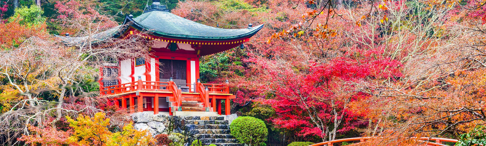

Welcome to Travel Conaway
Welcome to Travel Conaway, your premier destination for exploring the most captivating and breathtaking locations around the globe. We are dedicated to providing you with in-depth guides, helpful tips, and inspiring content to make your travel experiences truly unforgettable. Whether you're seeking adventure, relaxation, or cultural enrichment, our website is here to assist you every step of the way. Dive into our carefully curated content and start planning your next journey with confidence and excitement.
Our mission is to make travel planning easier and more enjoyable by offering insightful articles, stunning visuals, and practical advice. From discovering hidden gems to understanding the best travel practices, we aim to enhance your travel experience with reliable and engaging information. Thank you for visiting Travel Conaway, and we hope you find the inspiration you need to embark on your next adventure.
Featured Destination: Kyoto, Japan
Discover the ancient temples and shrines of Kyoto, a city that perfectly encapsulates Japan's rich cultural heritage. Wander through the serene paths of Kinkaku-ji, the Golden Pavilion, and witness the breathtaking architecture and lush gardens that surround it. Explore the historic district of Gion, where traditional wooden machiya houses and geisha culture transport you to a bygone era. Kyoto's enchanting blend of history and nature offers an unparalleled journey through Japan's storied past.
Immerse yourself in the tranquility of Kyoto’s beautiful gardens, such as the Arashiyama Bamboo Grove, where towering bamboo stalks create a mesmerizing natural corridor. Experience the elegance of Japanese tea ceremonies in authentic settings and enjoy seasonal festivals that showcase the local traditions and cuisine. Kyoto’s unique atmosphere and cultural depth make it a must-visit destination for anyone seeking a genuine taste of Japan's heritage.